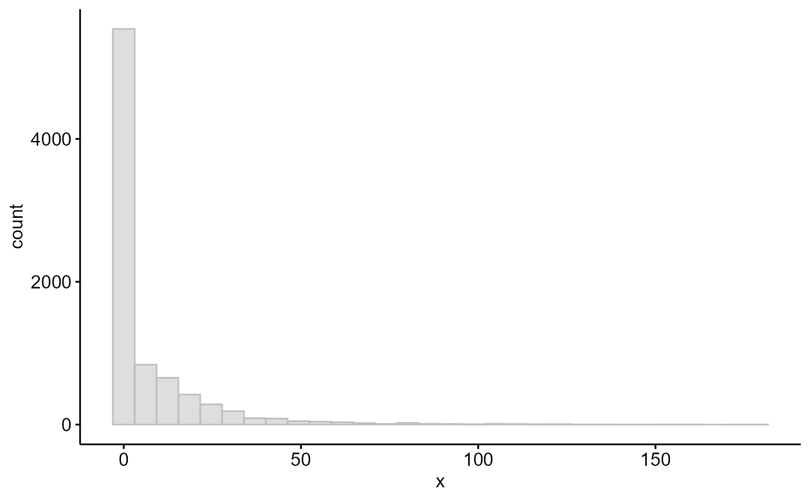
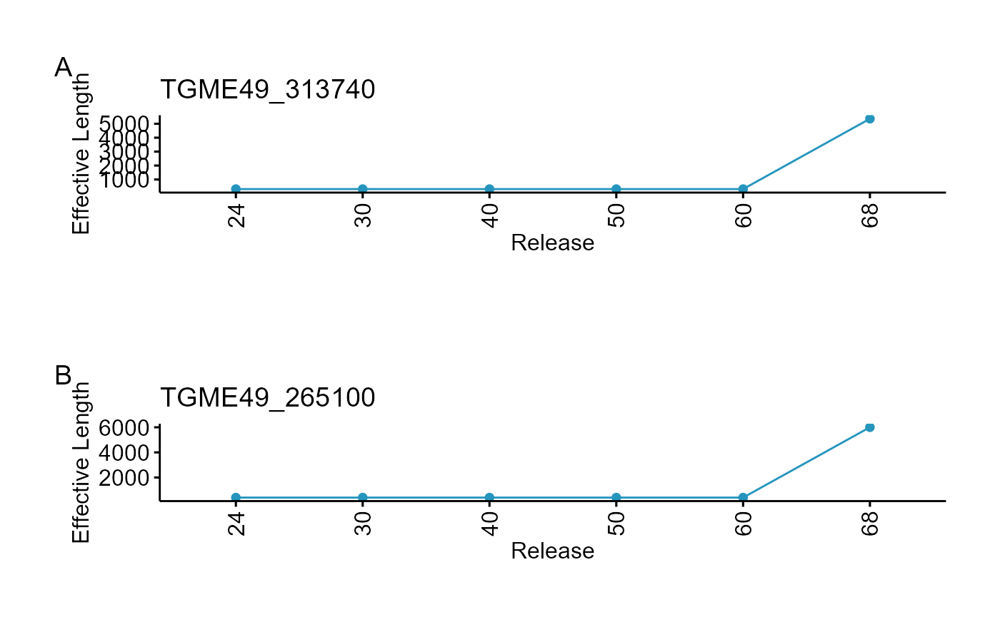

RNASeq: Need for reanalysis?
Rohit Satyam
King Abdullah University of Science & Technology, Saudi ArabiaAlberto Maillo
King Abdullah University of Science & Technology, Saudi ArabiaDavid Gomez-Cabrero
King Abdullah University of Science & Technology, Saudi ArabiaArnab Pain
King Abdullah University of Science & Technology, Saudi Arabia22 August, 2025
Source:vignettes/Need_for_reanalysis.Rmd
Need_for_reanalysis.RmdAbstract
This section examines how annotations evolve across successive VEuPathDB releases. As exon–intron boundaries are continually refined with incoming sequencing data, tracking shifts in effective gene length enables users to decide whether existing published datasets warrant reanalysis based on the magnitude of those changes.
Introduction
In the bioinformatics community, it is common to reuse published RNA-seq count or normalized count data without reprocessing, often overlooking important technical differences such as the version of genome annotation. Assembly updates typically include revisions to:
- GFF files, where gene models and exon‐intron structures are updated, UTRs redefined etc.
- GAF files, where GO terms are revised based on newly published evidence
For RNA-seq, these updates can substantially affect downstream analyses (e.g., over-representation or pathway enrichment). These changes are often documented in the NEWS sections of VEuPathDB.
For instance, in Plasmodium and Toxoplasma, two key assembly updates were:
- Release 51 (16 Mar 2021) for PlasmoDB
- Release 66 (28 Nov 2023) for ToxoDB, which included extensive gene‐model revisions
From an RNA-seq perspective, here we will focus on two factors that are known to affect biological outcomes and mappability. These include changes in:
- Number of Genes
- Exon‐intron boundaries: Measured here as effective gene length (the sum of exon lengths)
In the example below, we will use Plasmodium and
Toxoplasma releases and the plasmoRUtils function
getEffLen() to track how effective gene lengths hift across
versions.
Assessing Changes in Gene Number
We will compare six releases
(24, 30, 40, 50, 60, and 68) for both Plasmodium
and Toxoplasma. From the NEWS section, we know that in
Plasmodium, several loci initially annotated as rRNAs, lncRNAs,
or coding genes were later removed, and the mitochondrial genome of
PF3D7 was revised in 2019. Similarly,
Toxoplasma TGME49 gene models underwent extensive updates in
release 66.
library(plasmoRUtils)
library(dplyr)
library(tidyr)
library(tibble)
library(ggpubr)
library(GeneStructureTools)
library(ggplot2)
releases <- c(24,30,40,50,60,68)
## Getching GFFs from PlasmoDB and calculating effective lengths
pf3d7.gffs <- lapply(releases, function(x){
paste0("https://plasmodb.org/common/downloads/release-",x,"/Pfalciparum3D7/gff/data/PlasmoDB-",x,"_Pfalciparum3D7.gff") %>% getEffLen()
}) %>% setNames(releases)
## Getching GFFs from ToxoDB and calculating effective lengths
tgme49.gffs <- lapply(releases, function(x){
paste0("https://toxodb.org/common/downloads/release-",x,"/TgondiiME49/gff/data/ToxoDB-",x,"_TgondiiME49.gff") %>% getEffLen()
}) %>% setNames(releases)
## Let's plot changes in number of genes
pf3d7.ngenes<- lapply(pf3d7.gffs, nrow) %>% setNames(releases) %>% plyr::ldply()
tgme49.ngenes<- lapply(tgme49.gffs, nrow) %>% setNames(releases) %>% plyr::ldply()
ggpubr::ggline(pf3d7.ngenes,x=".id",y="V1", label = TRUE, color = "#2595be", fill = "#2595be")+labs(x="Releases",y="No. of Genes")+theme(axis.text.x = element_text(angle = 90, vjust = 0.5))
ggpubr::ggline(tgme49.ngenes,x=".id",y="V1", label = TRUE, color = "#2595be", fill = "#2595be")+labs(x="Releases",y="No. of Genes")+theme(axis.text.x = element_text(angle = 90, vjust = 0.5))For Plasmodium, the current release has 5720 genes. 57 genes have been removed since Release 24. Similarly 142 genes have been removed from Toxoplasma as compared to previous releases.
Assessing the difference in Effective gene lengths
To get intuition about counts of which genes will be affected mostly, we will calculate coefficient of variation where:
CV = (Standard Deviation / Mean) × 100
If the effective gene length of the gene didn’t change across releases, the CV will be equal to zero. Similarly if the change in effective length is major for a gene, the CV value will be higher. The CV also gives us intuition about which genes underwent drastic changes; eg: a 100 bp change will matter more for a 200 bp gene than for a 5000 bp gene.
We will calculate CV using following steps:
- Since gene IDs might vary across releases, we will first convert old
Gene IDs to new gene IDs using
toGeneid()and retain IDs which are common across all releases. - In old annotations like release 24, some genes coding for multiple
transcripts are present as separate gene entries each coding for 1
transcripts often denoted by versions before them such as
PF3D7_0618900.1,F3D7_0618900.2. This issue has been fixed in latest releases. To handle this we will remove the versions from gene IDs and take the average effective length for such genes. - We will than calculate the CV and filter all the genes with CV>0.
### Step1
# Remove version suffix from GeneIDs
df <- pf3d7.gffs %>% plyr::ldply() %>%
mutate(GeneID = GeneStructureTools::removeVersion(GeneID))
# Get annotation table and identify outdated IDs
annot <- getTable(org = "Plasmodium falciparum 3D7", db = "plasmodb")
old <- setdiff(unique(df$GeneID), annot$`Gene ID`) ## 152 old IDs
# Map outdated to Ensembl IDs
new_ids <- toGeneid(old, from = "old", to = "ensembl") %>%
select(`Gene ID`, `Previous ID(s)`) %>%
distinct() ## only 62 mapped
# Replace outdated IDs in df. These are mostly apicoplast genes
df$GeneID[match(new_ids$`Gene ID`,df$GeneID )] <- new_ids$`Gene ID`
# Filter for valid GeneIDs
subdf <- df %>%
filter(GeneID %in% annot$`Gene ID`)
### Step 2
# Aggregate length per gene across releases
df_agg <- subdf %>%
group_by(.id, GeneID) %>%
summarise(mean_length = round(mean(Length, na.rm = TRUE)), .groups = "drop") %>%
pivot_wider(names_from = GeneID, values_from = mean_length, values_fill = NA) %>%
column_to_rownames(".id") %>%
as.matrix()
### Step 3
# Coefficient of variation across releases
cv <- cv <- apply(df_agg, 2, function(x) (sd(x, na.rm = TRUE) / mean(x, na.rm = TRUE)) * 100) %>%
sort(decreasing = TRUE)
## Check for how many genes the effective length has changed
table(cv>0) #4535 genes have their effective length changed
#>
#> FALSE TRUE
#> 1185 4535
ggpubr::gghistogram(cv,color = "grey", fill = "grey")
## Let's filter top 20 genes whose effective length has changed drastically and see what they are
annot %>%
select(`Gene ID`, `Product Description`) %>%
distinct() %>%
filter(`Gene ID` %in% names(cv)[1:20]) %>%
column_to_rownames("Gene ID") %>%
.[names(cv)[1:20], , drop = FALSE] %>%
mutate(cv = cv[names(cv)[1:20]]) ## We see a lot of hypothetical genes
#> Product Description cv
#> PF3D7_1312500 conserved Plasmodium protein, unknown function 124.1221
#> PF3D7_1105000 histone H4 123.2382
#> PF3D7_1102800 early transcribed membrane protein 11.2 122.8477
#> PF3D7_1252300 conserved Plasmodium protein, unknown function 120.9319
#> PF3D7_1133000 conserved Plasmodium protein, unknown function 119.7104
#> PF3D7_0926200 conserved Plasmodium protein, unknown function 118.7044
#> PF3D7_0627000 conserved Plasmodium protein, unknown function 117.7699
#> PF3D7_0221800 hypothetical protein 117.3651
#> PF3D7_0624500 anaphase-promoting complex subunit 11, putative 117.0429
#> PF3D7_0202800 conserved Plasmodium protein, unknown function 116.1717
#> PF3D7_0936000 ring-exported protein 2 114.3509
#> PF3D7_1003500 40S ribosomal protein S20e, putative 113.8707
#> PF3D7_1325700 conserved Plasmodium protein, unknown function 113.8358
#> PF3D7_0817800 respiratory chain complex 3 associated protein 3 113.8013
#> PF3D7_0323000 translation machinery-associated protein 7, putative 113.3105
#> PF3D7_0530000 conserved Plasmodium protein, unknown function 112.0993
#> PF3D7_1202900 high mobility group protein B1 112.0186
#> PF3D7_1355800 splicing factor 3B subunit 5, putative 111.9045
#> PF3D7_1102700 early transcribed membrane protein 11.1 111.8313
#> PF3D7_0705700 40S ribosomal protein S29, putative 111.1493
# plot top 2 variable genes
plts <- names(cv)[1:2] %>%
lapply(function(gid) {
df %>%
filter(GeneID == gid) %>%
ggline(x = ".id", y = "Length",color = "#2595be", fill = "#2595be") +
labs(title = gid, x = "Release", y = "Effective Length") +
theme(axis.text.x = element_text(angle = 90, vjust = 0.5))
})
library(sjPlot)
plot_grid(plts)From the exploration above, we see a 79% of gene models have been revised since release 50 and therefore inform us that any published RNASeq dataset using annotations older than Release 50 must be reanalysed since the read counts are destined to change for these genes.
If you are working on annotation of hypothetical genes, you should be cautious about which assembly you use since your gene might appear to be down regulated as per old annotation but this might change with change in the current annotation.
Let’s recycle the code above for Toxoplasma.
library(dplyr)
library(tidyr)
library(tibble)
library(ggpubr)
library(GeneStructureTools)
### Step1
# Remove version suffix from GeneIDs
df <- tgme49.gffs %>% plyr::ldply() %>%
mutate(GeneID = GeneStructureTools::removeVersion(GeneID))
# Get annotation table and identify outdated IDs
annot <- getTable(org = "Toxoplasma gondii ME49", db = "toxodb")
old <- setdiff(unique(df$GeneID), annot$`Gene ID`) ## 583 old IDs
# Map outdated to Ensembl IDs
new_ids <- toGeneid(old, from = "old", to = "ensembl", org = "Toxoplasma gondii ME49", db = "toxodb") %>%
select(`Gene ID`, `Previous ID(s)`) %>%
distinct() ## only 332 mapped
# Replace outdated IDs in df. These are mostly apicoplast genes
df$GeneID[match(new_ids$`Gene ID`,df$GeneID )] <- new_ids$`Gene ID`
# Filter for valid GeneIDs
subdf <- df %>%
filter(GeneID %in% annot$`Gene ID`)
### Step 2
# Aggregate length per gene across releases
df_agg <- subdf %>%
group_by(.id, GeneID) %>%
summarise(mean_length = round(mean(Length, na.rm = TRUE)), .groups = "drop") %>%
pivot_wider(names_from = GeneID, values_from = mean_length, values_fill = NA) %>%
column_to_rownames(".id") %>%
as.matrix()
### Step 3
# Coefficient of variation across releases
cv <- cv <- apply(df_agg, 2, function(x) (sd(x, na.rm = TRUE) / mean(x, na.rm = TRUE)) * 100) %>%
sort(decreasing = TRUE)
## Check for how many genes the effective length has changed
table(cv>0) #3390 genes have their effective length changed
#>
#> FALSE TRUE
#> 4947 3390
ggpubr::gghistogram(cv,color = "grey", fill = "grey")
## Let's filter top 20 genes whose effective length has changed drastically and see what they are
annot %>%
select(`Gene ID`, `Product Description`) %>%
distinct() %>%
filter(`Gene ID` %in% names(cv)[1:20]) %>%
column_to_rownames("Gene ID") %>%
.[names(cv)[1:20], , drop = FALSE] %>%
mutate(cv = cv[names(cv)[1:20]]) ## We see a lot of hypothetical genes
#> Product Description
#> TGME49_313740 zinc finger (CCCH type) motif-containing protein
#> TGME49_265100 hypothetical protein
#> TGME49_288850 hypothetical protein
#> TGME49_245440 hypothetical protein
#> TGME49_223845 hypothetical protein
#> TGME49_313890 hypothetical protein
#> TGME49_231998 hypothetical protein
#> TGME49_291160 dynein light polypeptide 4, axonemal, putative
#> TGME49_311820 hypothetical protein
#> TGME49_230135 Kinesin-associated protein
#> TGME49_209945 hypothetical protein
#> TGME49_254140 DNA-directed RNA polymerase II RPABC4
#> TGME49_244890 cyclin, putative
#> TGME49_310177 hypothetical protein
#> TGME49_240790 dynein light chain, putative
#> TGME49_260825 hypothetical protein
#> TGME49_308830 dual specificity protein phosphatase
#> TGME49_261470 U6 snRNA-associated Sm family protein LSm6, putative
#> TGME49_275750 small nuclear ribonucleoprotein E, putative
#> TGME49_283470 Kazal-type serine protease inhibitor domain-containing protein
#> cv
#> TGME49_313740 178.6757
#> TGME49_265100 171.6388
#> TGME49_288850 161.6959
#> TGME49_245440 157.8947
#> TGME49_223845 152.1074
#> TGME49_313890 151.9148
#> TGME49_231998 146.3761
#> TGME49_291160 143.9601
#> TGME49_311820 134.4396
#> TGME49_230135 134.2367
#> TGME49_209945 129.9972
#> TGME49_254140 126.7883
#> TGME49_244890 125.7379
#> TGME49_310177 125.1441
#> TGME49_240790 121.8464
#> TGME49_260825 121.0684
#> TGME49_308830 120.6382
#> TGME49_261470 120.3902
#> TGME49_275750 119.9072
#> TGME49_283470 119.0964
# plot top 2 variable genes
plts <- names(cv)[1:2] %>%
lapply(function(gid) {
df %>%
filter(GeneID == gid) %>%
ggline(x = ".id", y = "Length",color = "#2595be", fill = "#2595be") +
labs(title = gid, x = "Release", y = "Effective Length") +
theme(axis.text.x = element_text(angle = 90, vjust = 0.5))
})
library(sjPlot)
plot_grid(plts)
In this case 40% of the genes show change in effective length as compared to past releases and this change happened after release 60 (Release 66 to be precise but for brevity of vignette, we chose to use 60 and 68).
Discussion
The scope of reannotation directly influences whether legacy datasets
remain reliable or must be reprocessed; such technical choices
inevitably affect downstream biological interpretations. We found that
every major bulk transcriptomic study for Plasmodium in
PlasmoDB relies on annotations predating release 51 and can
benefit from reanalysis. Therefore, any analysis—be it correlation,
co‐expression, or single‐cell mapping—should use reanalyzed data based
on up‐to‐date GFFs. Given VEuPathDB’s constrained resources, the
reanalysis responsibility falls to the end users to regenerate and share
these reprocessed datasets whenever feasible.
Session
sessionInfo()
#> R version 4.4.1 (2024-06-14 ucrt)
#> Platform: x86_64-w64-mingw32/x64
#> Running under: Windows 11 x64 (build 26100)
#>
#> Matrix products: default
#>
#>
#> locale:
#> [1] LC_COLLATE=English_India.utf8 LC_CTYPE=English_India.utf8
#> [3] LC_MONETARY=English_India.utf8 LC_NUMERIC=C
#> [5] LC_TIME=English_India.utf8
#>
#> time zone: Asia/Riyadh
#> tzcode source: internal
#>
#> attached base packages:
#> [1] stats graphics grDevices utils datasets methods base
#>
#> other attached packages:
#> [1] sjPlot_2.9.0 GeneStructureTools_1.24.0
#> [3] ggpubr_0.6.1 ggplot2_3.5.2
#> [5] tibble_3.3.0 tidyr_1.3.1
#> [7] dplyr_1.1.4 plasmoRUtils_1.1.0
#> [9] rlang_1.1.6 readr_2.1.5
#> [11] janitor_2.2.1 BiocStyle_2.32.1
#>
#> loaded via a namespace (and not attached):
#> [1] IRanges_2.38.1 dichromat_2.0-0.1
#> [3] vroom_1.6.5 progress_1.2.3
#> [5] vsn_3.72.0 nnet_7.3-19
#> [7] Biostrings_2.72.1 vctrs_0.6.5
#> [9] digest_0.6.37 png_0.1-8
#> [11] proxy_0.4-27 MSnbase_2.30.1
#> [13] deldir_2.0-4 parallelly_1.45.1
#> [15] MASS_7.3-61 pkgdown_2.1.3
#> [17] reshape2_1.4.4 foreach_1.5.2
#> [19] BiocGenerics_0.50.0 withr_3.0.2
#> [21] xfun_0.52 survival_3.8-3
#> [23] memoise_2.0.1 hexbin_1.28.5
#> [25] ggsci_3.2.0 mixtools_2.0.0.1
#> [27] systemfonts_1.2.3 ragg_1.4.0
#> [29] gtools_3.9.5 easyPubMed_2.13
#> [31] Formula_1.2-5 prettyunits_1.2.0
#> [33] KEGGREST_1.44.1 promises_1.3.3
#> [35] httr_1.4.7 rstatix_0.7.2
#> [37] restfulr_0.0.16 globals_0.18.0
#> [39] ps_1.9.1 rstudioapi_0.17.1
#> [41] UCSC.utils_1.0.0 generics_0.1.4
#> [43] base64enc_0.1-3 processx_3.8.6
#> [45] curl_6.4.0 ncdf4_1.24
#> [47] S4Vectors_0.42.1 zlibbioc_1.50.0
#> [49] ScaledMatrix_1.12.0 randomForest_4.7-1.2
#> [51] bio3d_2.4-5 GenomeInfoDbData_1.2.12
#> [53] SparseArray_1.4.8 xtable_1.8-4
#> [55] stringr_1.5.1 desc_1.4.3
#> [57] doParallel_1.0.17 evaluate_1.0.4
#> [59] S4Arrays_1.4.1 BiocFileCache_2.12.0
#> [61] preprocessCore_1.66.0 hms_1.1.3
#> [63] GenomicRanges_1.56.2 bookdown_0.43
#> [65] irlba_2.3.5.1 colorspace_2.1-1
#> [67] filelock_1.0.3 magrittr_2.0.3
#> [69] snakecase_0.11.1 later_1.4.2
#> [71] viridis_0.6.5 lattice_0.22-6
#> [73] MsCoreUtils_1.16.1 future.apply_1.20.0
#> [75] SparseM_1.84-2 XML_3.99-0.18
#> [77] scuttle_1.14.0 matrixStats_1.5.0
#> [79] Hmisc_5.2-3 class_7.3-22
#> [81] pillar_1.11.0 nlme_3.1-166
#> [83] iterators_1.0.14 compiler_4.4.1
#> [85] beachmat_2.20.0 stringi_1.8.7
#> [87] gower_1.0.2 SummarizedExperiment_1.34.0
#> [89] dendextend_1.19.1 lubridate_1.9.4
#> [91] GenomicAlignments_1.40.0 drawProteins_1.24.0
#> [93] plyr_1.8.9 crayon_1.5.3
#> [95] abind_1.4-8 BiocIO_1.14.0
#> [97] bit_4.6.0 chromote_0.5.1
#> [99] pcaMethods_1.96.0 codetools_0.2-20
#> [101] textshaping_1.0.1 recipes_1.3.1
#> [103] BiocSingular_1.20.0 MLInterfaces_1.84.0
#> [105] bslib_0.9.0 e1071_1.7-16
#> [107] biovizBase_1.52.0 plotly_4.11.0
#> [109] LaplacesDemon_16.1.6 MultiAssayExperiment_1.30.3
#> [111] splines_4.4.1 Rcpp_1.1.0
#> [113] dbplyr_2.5.0 sparseMatrixStats_1.16.0
#> [115] interp_1.1-6 knitr_1.50
#> [117] blob_1.2.4 clue_0.3-66
#> [119] mzR_2.38.0 AnnotationFilter_1.28.0
#> [121] fs_1.6.6 checkmate_2.3.2
#> [123] QFeatures_1.14.2 listenv_0.9.1
#> [125] mzID_1.42.0 DelayedMatrixStats_1.26.0
#> [127] Gviz_1.48.0 ggsignif_0.6.4
#> [129] Matrix_1.7-1 statmod_1.5.0
#> [131] tzdb_0.5.0 lpSolve_5.6.23
#> [133] pkgconfig_2.0.3 tools_4.4.1
#> [135] cachem_1.1.0 BSgenome.Mmusculus.UCSC.mm10_1.4.3
#> [137] RSQLite_2.4.1 viridisLite_0.4.2
#> [139] rvest_1.0.4 DBI_1.2.3
#> [141] impute_1.78.0 fastmap_1.2.0
#> [143] rmarkdown_2.29 scales_1.4.0
#> [145] grid_4.4.1 gt_1.0.0
#> [147] Rsamtools_2.20.0 broom_1.0.8
#> [149] sass_0.4.10 coda_0.19-4.1
#> [151] FNN_1.1.4.1 BiocManager_1.30.26
#> [153] VariantAnnotation_1.50.0 graph_1.82.0
#> [155] carData_3.0-5 SingleR_2.6.0
#> [157] rpart_4.1.23 farver_2.1.2
#> [159] yaml_2.3.10 AnnotationForge_1.46.0
#> [161] latticeExtra_0.6-30 foreign_0.8-87
#> [163] MatrixGenerics_1.16.0 rtracklayer_1.64.0
#> [165] cli_3.6.5 purrr_1.1.0
#> [167] stats4_4.4.1 txdbmaker_1.0.1
#> [169] lifecycle_1.0.4 caret_7.0-1
#> [171] Biobase_2.64.0 mvtnorm_1.3-3
#> [173] lava_1.8.1 kernlab_0.9-33
#> [175] backports_1.5.0 BiocParallel_1.38.0
#> [177] annotate_1.82.0 timechange_0.3.0
#> [179] gtable_0.3.6 rjson_0.2.23
#> [181] parallel_4.4.1 pROC_1.18.5
#> [183] limma_3.60.6 jsonlite_2.0.0
#> [185] bitops_1.0-9 bit64_4.6.0-1
#> [187] pRoloc_1.44.1 jquerylib_0.1.4
#> [189] segmented_2.1-4 timeDate_4041.110
#> [191] lazyeval_0.2.2 htmltools_0.5.8.1
#> [193] affy_1.82.0 GO.db_3.19.1
#> [195] rappdirs_0.3.3 ensembldb_2.28.1
#> [197] glue_1.8.0 polyglotr_1.7.0
#> [199] httr2_1.2.0 XVector_0.44.0
#> [201] RCurl_1.98-1.17 MALDIquant_1.22.3
#> [203] mclust_6.1.1 BSgenome_1.72.0
#> [205] jpeg_0.1-11 gridExtra_2.3
#> [207] igraph_2.1.4 R6_2.6.1
#> [209] SingleCellExperiment_1.26.0 labeling_0.4.3
#> [211] GenomicFeatures_1.56.0 cluster_2.1.8
#> [213] stringdist_0.9.15 GenomeInfoDb_1.40.1
#> [215] ipred_0.9-15 DelayedArray_0.30.1
#> [217] tidyselect_1.2.1 ProtGenerics_1.36.0
#> [219] htmlTable_2.4.3 sampling_2.11
#> [221] xml2_1.3.8 car_3.1-3
#> [223] AnnotationDbi_1.66.0 future_1.67.0
#> [225] ModelMetrics_1.2.2.2 rsvd_1.0.5
#> [227] affyio_1.74.0 topGO_2.56.0
#> [229] data.table_1.17.8 websocket_1.4.4
#> [231] mgsub_1.7.3 htmlwidgets_1.6.4
#> [233] RColorBrewer_1.1-3 biomaRt_2.60.1
#> [235] hardhat_1.4.1 prodlim_2025.04.28
#> [237] PSMatch_1.8.0